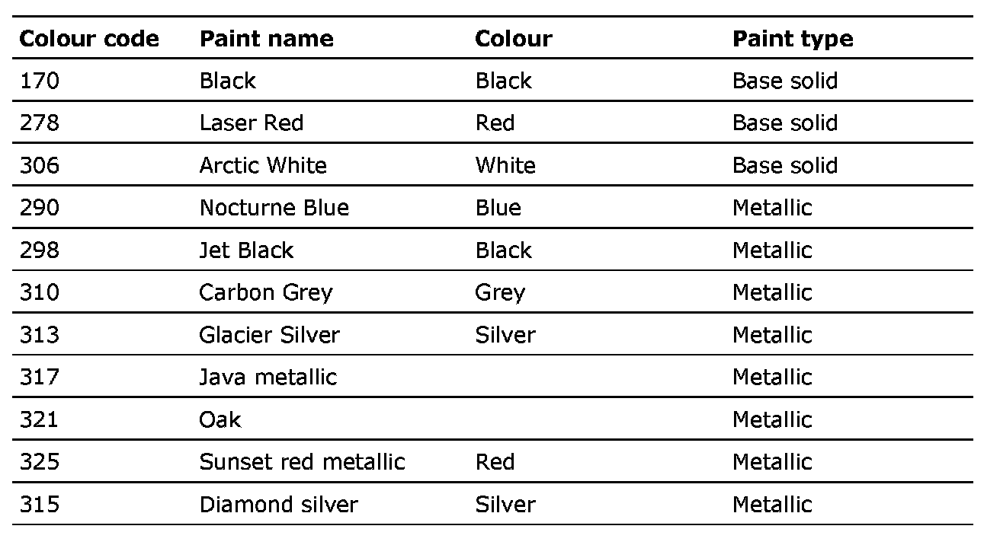
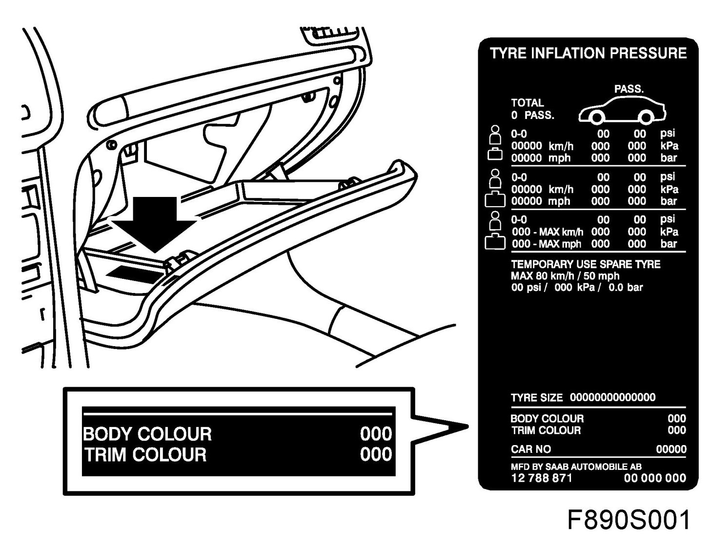

Body Colours, CV
Body Colours, CV

IMPORTANT: Always quote the car's colour code when ordering paint.
Base solid paint with clear varnish
All solid paints have now been replaced with base solid and clear varnish. There is a high risk of mistaking these to paint systems when repainting.
The label for the colour code and tyre pressure on cars with base solid paint is marked with BASE SOLID. The label is situated inside the glove box.

Due to differences in their finish and ageing characteristics, these two paint systems should never be mixed.
Ordinary single layer solid paint with clear enamel is not quality approved by Saab Automobile AB.
Spray and enamel applicators can be used as usual for smaller repairs.
Metallic paints are not affected.
IMPORTANT: Chemical products like paint, adhesive, primer and the like should be stored and used in accordance with the laws and regulations of your country. Always read the warning labels and directions for use on the product packaging before commencing work.